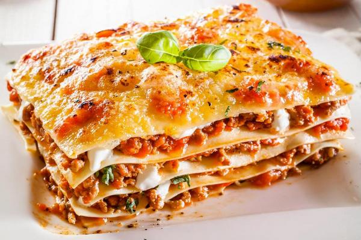
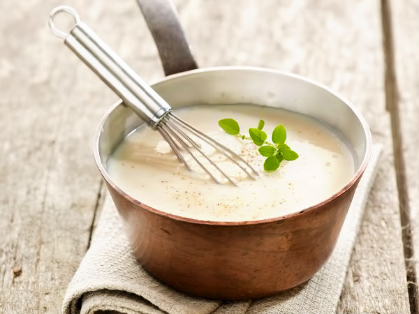
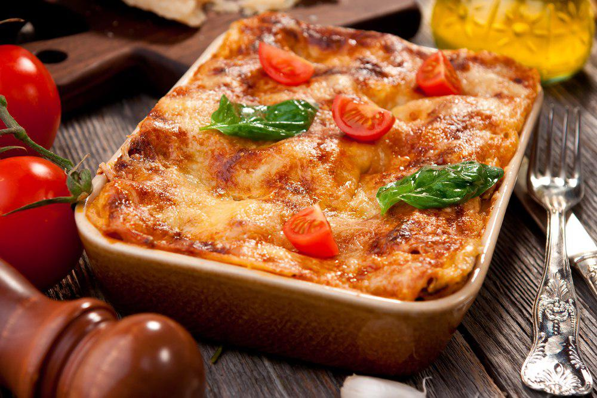

Лазанья

Лазанья с мясным фаршем - изумительно вкусное итальянское блюдо, получившее признание по всему миру. Очень
сытное, готовится из слоёв теста и слоев мясной или овощной начинки, с соусом Бешамель. Процесс приготовления такой
лазаньи с мясным фаршем совсем не сложен.
Лазанья отлично подойдет к любому празднику или на воскресный ужин.
Ингредиенты для классической лазаньи:
- 20 мл растительного масла,
- 500 г мясного фарша,
- 1 шт. лука репчатого,
- 1 зубчик чеснока,
- чайная ложка специй для фарша (смесь итальянских трав или сушеного базилика с петрушкой, сельдереем, орегано
или смесь перцев),
- 100 г томатного пюре (или жидкого кетчупа без приправ)
- 2 крупных помидора,
- 1 морковь,
- соль и перец по вкусу,
- 250 г готовых листов лазаньи (8-12 штук),
- 250 г сыра чеддер.
Рецепт приготовления:
- Репчатый лук мелко режем, помидоры нарезаем кусочками, сыр и морковь трем на терке, чеснок измельчаем
- На глубокой сковороде нагреваем растительное масло и обжариваем лук до золотистого цвета.
- Как только лук обжарится, добавляем к нему морковь, жарим 5 минут.
- Затем добавляем мясной фарш, специи для фарша, хорошо перемешиваем и жарим на слабом огне еще 10 минут.
- Далее добавляем томатное пюре, помидоры, чеснок, готовим на медленном огне под крышкой еще 10 минут, солим и
перчим по вкусу.
-
Готовим соус Бешамель. На другой сковороде или в сотейнике растапливаем сливочное масло. Добавляем муку и
обжариваем минут 5 до золотистого цвета, постоянно помешивая получившиеся комочки.
Для соуса Бешамель:
- 100 г сливочного масла,
- 2 ст. л. муки,
- 0,7 л молока,
- 2,5 г мускатного ореха,
- 1 лавровый лист,
- соль и белый перец по вкусу.

- Отдельно кипятим молоко, всыпаем в него щепотку мускатного ореха и лавровый лист. Даем настояться 10 минут и
вынимаем лавровый лист.
- Добавляем к муке молоко, вливая его тонкой струйкой, чтобы не образовались комочки и варим, постоянно
помешивая венчиком, пока соус не загустеет. Не даём закипать. В самом конце доводим почти до кипения и
снимаем с огня. Слегка солим и перчим.
- На смазанное растительным маслом дно формы для выпечки наливаем немного соуса Бешамель, укладываем готовые
листы лазаньи; варки они для этого рецепта не требует, поэтому просто укладываем.
- Поверх теста выкладываем мясную начинку, сверху щедро заливаем соусом бешамель и посыпаем тертым сыром.
- Повторяем слои, пока все ингредиенты не будут использованы.
- После сыра выкладываем пласт теста, поливаем соусом Бешамель, посыпаем тертым сыром и запекаем в течении 40
минут в горячей духовке (200 °С) до образования румяной корочки.

Вверх